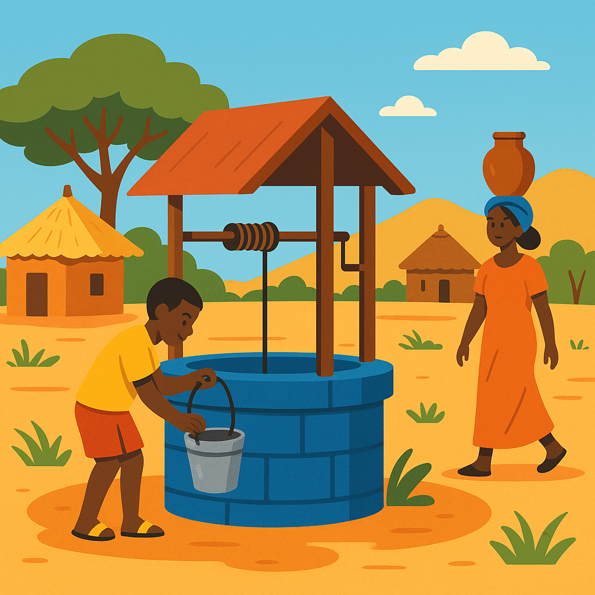
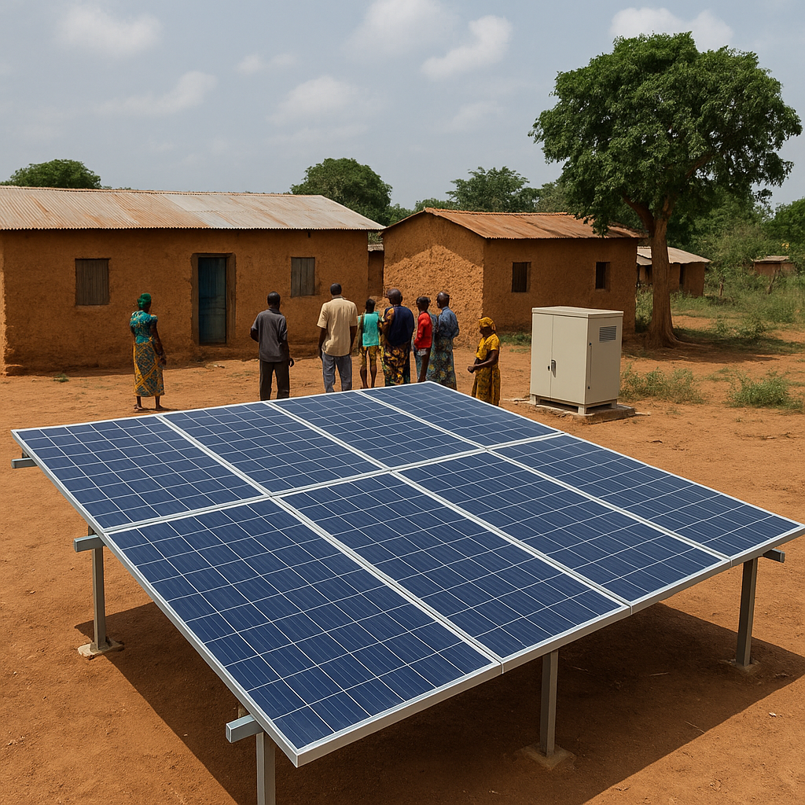

Projets en vedette
Découvrez les initiatives qui ont le plus besoin de votre soutien

Santé
Centre de santé rural à Daloa
Construction d'un dispensaire moderne dans les villages isolés.
4 200 000 FCFA sur 8 000 000 FCFA
53% collecté
127 contributeurs

Éducation
Mini-centrale solaire communautaire – Sédhiou
Installer une centrale solaire pour alimenter un village en électricité et favoriser des activités économiques durables.
20 000 000 FCFA sur 28 000 000 FCFA
71% collecté
109 contributeurs
 Agriculture
Agriculture
Ferme biologique communautaire
Culture de légumes bio et formation de 50 agriculteurs.
3 500 000 FCFA sur 6 000 000 FCFA
58% collecté
94 contributeurs
Un puits pour Koura
Finançons un puits durable pour l’accès à l’eau.
Des livres pour tous
Offrons des livres neufs aux écoles rurales.
Campagne médicale
Une équipe mobile pour les villages isolés.
💡 Comment fonctionne SolidFund ?
En trois étapes simples, transformez vos idées en projets soutenus par toute la communauté.
Créez votre projet
Ajoutez vos besoins et objectifs en quelques clics.
Partagez avec le monde
Diffusez votre campagne sur vos réseaux sociaux.
Recevez du soutien
Collectez des dons et concrétisez votre impact.